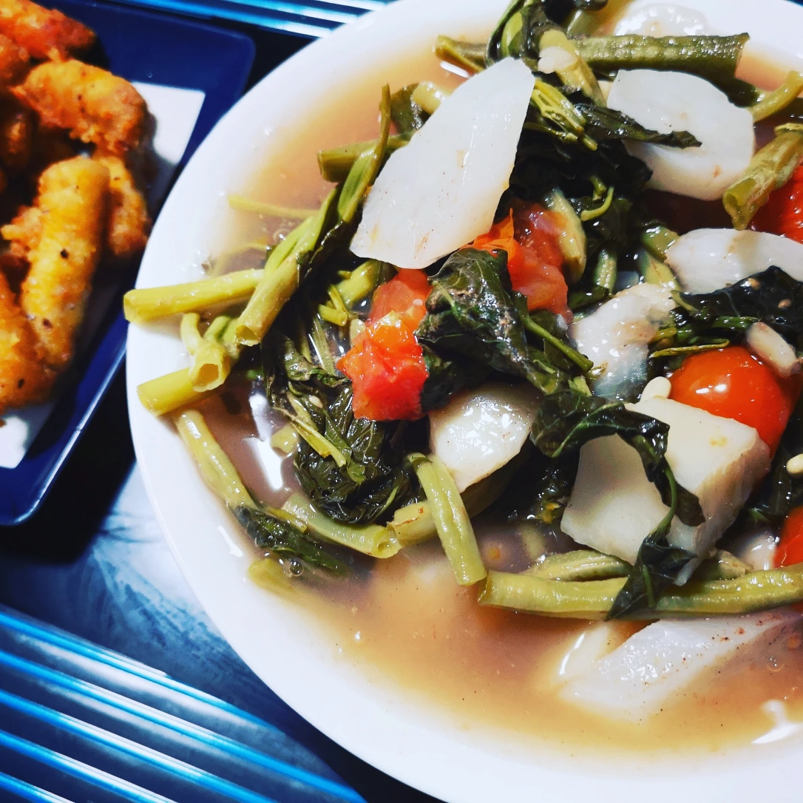

Sinigang

Description
Sinigang is a tamarind based soup that has lots of savoury tangy flavour and is full of vegetables and greens.
Typically served with rice and traditionally made with pork,
this version is made with roasted soy bites to achieve a similar fall-apart pork-like texture in this soup!
Ingredients
- 400g tamarind paste (1 package) + 1 cup water
- 8 cups (2L) water
- 1 tbsp (15 mL) mushroom broth powder (or use vegetable broth instead of water)
- 1 medium cooking onion (150 g), quartered
- 2 medium tomatoes (200 g), sliced into wedges
- 5 inches of daikon (180 g), sliced into thin half moons
- 2 small eddos (100 g), peeled and quartered
- 1 tbsp vegan fish sauce (you can substitute soy and add a piece of kombu to add some fishiness and funk)
- 2 cups (300 g) King's Vegetarian Roasted Soy Bites (or your favourite faux pork seitan)
- 12 pieces okra (215 g) (do not trim)
- 2.5 cups long beans (230 g), cut into 2-3 inch long pieces
- 4 cups (285 g) baby bok choy (about 5-6 bulbs, separated)
- 2 green chillies (siling haba)
- Steamed rice to serve
Steps
- In a medium sized bowl, combine 1 cup of water with the tamarind paste.
Mash well to hydrate the tamarind pulp and try to squeeze as much pulp out as possible.
Strain the mixture and squeeze the seeds well. Reserve the strained mixture for the soup, discard the seedy pulp.
- In a large pot, combine tamarind paste, water (or vegetable broth if you're not using mushroom broth powder),
mushroom broth powder, onion, tomatoes, daikon, and eddo. Bring to a boil, then lower to a steady simmer and cover,
cooking for 20 minutes or until the eddo is nearly tender, stirring occasionally.
- Then add the roasted soy bites, okra, long beans, and baby bok choy and make sure everything is submerged in the broth.
Bring up the heat to a medium, and cook for another 15-20 minutes until the long beans are tender,
okra is soft (be careful not to break the okra in the soup or it'll thicken the soup) and the roasted soy bites have absorbed the flavour.
Check that the eddos are fork-tender (like you would for a potato).
Add the two green chillies into the broth and stir in, cooking for an additional 2-3 minutes to bring out the aromatic fragrance of the chilli.
As long as you don't break the chillis, the soup won't be spicy (but feel free to smash them a bit if you want some heat).
Add kosher salt if you find you need more seasoning.
- Serve over steamed rice, and enjoy!